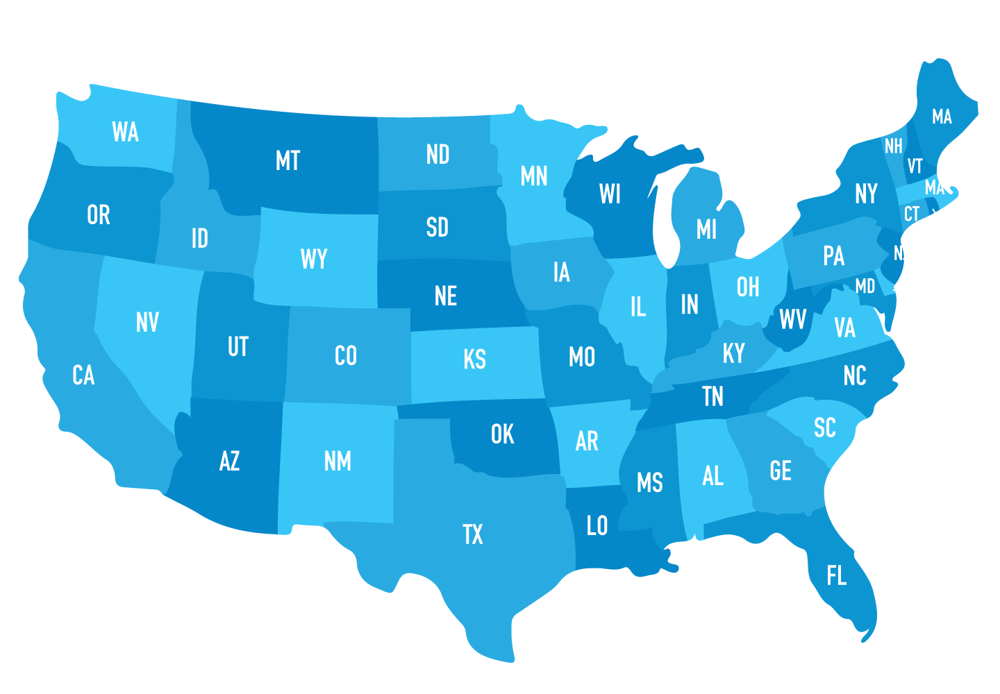
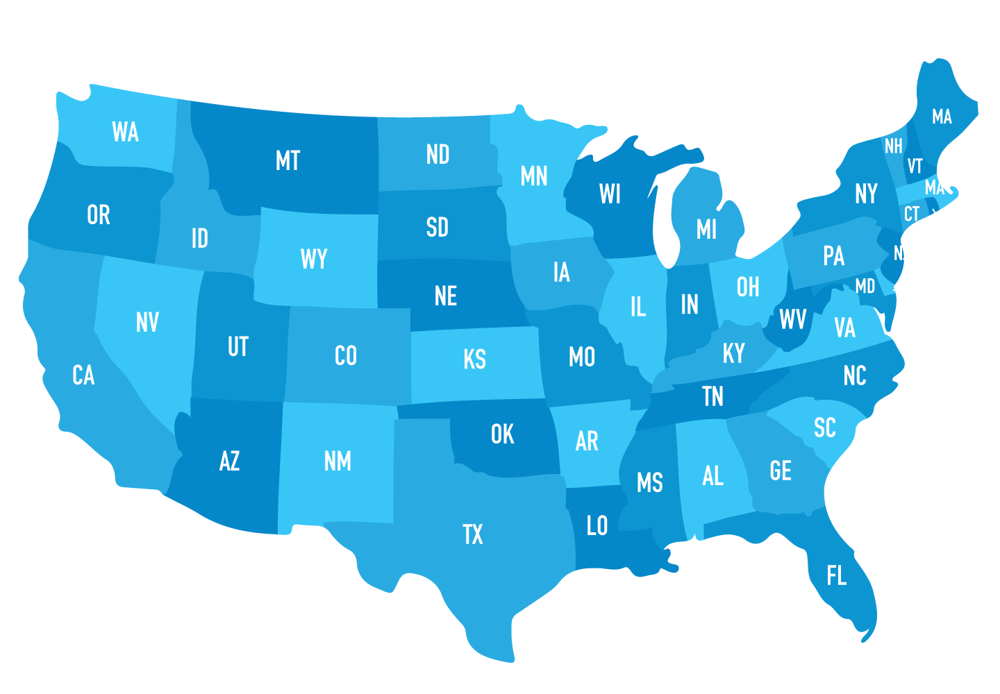

Period 7 is full of content as it takes on the Progressive Era and both World Wars. The United States is beginning to reach its prime state. (AP: This is 17% of your exam, by far the largest part of the exam so make sure to really understand and know this unit [you should know the others too]).
This period starts with the United States going to war against Spain in 1898 (Spanish-American War 1898) because they wanted to help Cuba gain their independence. This marked the beginning of American imperialism. After the war, the United States gained the Philippines, Guam, and Puerto Rico.
- Teller Amendment - promised that the US is going to overthrow Spanish rule in Cuba and will grant Cuba its independence
- Yellow journalism - newspaper practice of sensationalizing the news to sell more papers
- Popularized by Joseph Pulitzer and William Randolph Hearst
- These newspapers pushed the US into war with Spain
- Maine - Navy ship that sank in Havana Harbor
- Newspapers said Spain bombed it and this started the war (it wasn’t really Spain and probably an accident)
- Platt Amendment - overruled the Teller Amendment and instead of granting independence, Cuba became part of the US
- Allowed the US to use Cuba for its own interest (ex: naval bases)
Now, most of the world was already involved in imperialism for decades. The United States joined in a little late and continued on through the next decade.
- Filipino Rebellion - unsuccessful rebellion led by Emilio Aguinaldo, who wanted to gain independence from American control
- Insular Cases - Supreme Court ruled that people in island territories did not receive constitutional rights - see cases page
- Roosevelt Corollary 1904 - extension of the Monroe Doctrine
- President Roosevelt said that the US is the policemen of the western hemisphere
- Dollar Diplomacy - President Taft’s policy of using economic power to promote American interest in Latin America and East Asia
- Open Door Policy - foreign policy for China
- Wanted free trade with China because Europe and Japan were trying to take over and control China
The 1900s also marked the start of the Progressive Era. It was an era of government reform to better improve the nation and worked to regulate capitalism, starting from President Roosevelt’s term until the start of American involvement in World War I.
- Muckrakers - American journalists who exposed corruption of businesses and politics and lead to the progressive movement
- Florence Kelley - social and political reformer who campaigned for the minimum wage, 8-hour workday, and children’s rights
- Helped to create the National Association for the Advancement of Colored People
- The Jungle - novel written by Upton Sinclair in 1906 that exposed Chicago slaughterhouses
- Northern Securities Company 1904 - railroad monopoly dissolved by Theodore Roosevelt
- Pure Food and Drug Act 1906 - law that made it illegal to sell impure labeled food and drugs
- Meat Inspection Act 1906 - law that required federal inspection of meatpacking
Much of what happened in politics meshed with the Progressive Era. Legislation was passed to deal with trusts and monopolies, as well as to help out the economy.
- Underwood Tariff 1913 - law that reduced tariff and made up for lost revenue by providing for a graduated income tax
- Federal Reserve Act 1913 - established a system of 12 federal banks and the Federal Reserve Board would set uniform interest rates and regulate money supply
- Clayton Antitrust Act 1914 - law that made business monopolies illegal
- Worked better than the Sherman Antitrust Act
- 17th Amendment - allowed for the direct election of US senators
- Elkins Act of 1903 - imposed heavy fines on railroads that offered rebates and upon the shippers that accepted the rebates
- Hepburn Act 1906 - gave Interstate Commerce Commission the power to set maximum railroad rates and extend its jurisdiction.
- Led to a decrease in free passes to loyal shippers
- New Nationalism - Roosevelt’s 1912 campaign to empower big government and regulate businesses and promote social welfare
- New Freedom - Wilson’s 1912 campaign that wanted to break up monopolies and restore competition (free market) and no social welfare
The problem starts with the death of Archduke Franz Ferdinand of Austria and the fact that a bunch of nations made their own cliques (it’s like high school). All of a sudden, someone is accused of stealing someone else’s significant other (or killed the ruler of their nation) and you’ve got a bunch of people (countries) against one another to back up their buddy. This, my friends, is World War I.
- Lusitania - an American ship that was torpedoed by German u-boats and sunk, killing over a thousand Americans
- Sussex Pledge - pledge made by Germany to not torpedo any American ships
- Fell through because the Germans torpedoed the S.S. Sussex
- Zimmerman Telegram 1917 - Telegram sent by Germany to Mexico that got intercepted by Britain
- Message persuaded Mexico to become Germany’s ally and attack US in return for the territories the US took from Mexico (Texas, New Mexico, and Arizona)
- This was pretty much the last straw as the US declared war on Germany
- Fourteen Points 1918 - program for maintaining peace after WWI
- Included arms reduction, national self-determination, and League of Nations
- Treaty of Versailles 1919 - Big Four (US, Britain, France, and Italy) gathered to end the war and developed a harsh punishment for Germany
- Wilson used the Fourteen Points to end the war by promising it will be in the treaty, but the other three nations disagreed
- League of Nations - Wilson idea to create an organization where nations come together
- The Senate did not approve of this or the treaty
- Dawes Plan 1924 - system of giving loans to Germany
- Germany pays the debt to the Allies, then the Allies give it back to America
- Basically a cycle that led the US into the Great Depression
Well, things just sort of get worse for America. Turns out freedom of speech doesn’t really apply in wartimes and people were pretty scared of radicals and the rest of the world (Red Scare). America proceeded to enter a period of isolationism and tried to focus on themselves.
- Espionage Act of 1917 and Sedition Act of 1918 - illegal to encourage disloyalty to the US in writing
- Basically limited the freedom of speech during war times
- Palmer Raids 1919-1920 - led by Attorney General Palmer because the government was searching and deporting foreign born political activists
- Sacco and Vanzetti 1927 - Two Italians anarchist who were convicted in 1921 of murder
- Even though there were public protests that claimed they were innocent, they were still executed
- Ku Klux Klan - terrorist group that rose again, but this time against foreigners because of communism
- Emergency Quota Act 1921 and Immigration Act of 1924 - Acts passed by Congress to limit immigration
- Targeted Italians, Greeks, Poles, and Eastern Europeans
- Kellogg Briand Pact 1928 - agreement among nations to not use war to solve conflicts
- Failed because then there was WWII
The Roaring Twenties were prosperous and led to a great deal of cultural innovation. It was the golden times, the calm before the storm.
- 19th Amendment - gave women the right to vote
- Flappers - counter culture where women went against conservative ideas about women
- They wore shorter dresses and smoked (which was scandalous at the time)
- Prohibition/18th Amendment - WCTU destroyed liquor stores to stop drinking and finally passed an amendment that banned alcohol
- Wright Brothers - first successful airplane
- Model T - the Model T became the first inexpensive, mass-produced automobile, invented by Henry Ford
- KDKA in Pittsburgh radio - first commercial radio station; broadcasted the US presidential election and became part of the culture
- Charles Lindbergh - flew across Atlantic in 1927 all by himself
- The Jazz Singer 1927 - first motion picture with sound
The 1920s weren’t safe from corrupt politics though.
- Teapot Dome Scandal - Albert Fall (Secretary of the Interior) leased out oil reserves to oilmen Harry Sinclair and Edward Doheny because of a $400,000 bribe
African Americans experienced a slight rise in social status and advancement in culture.
- Harlem Renaissance - literary and artist movement in which black writers describe American life
- Famous people include Langston Hughes and Louis Armstrong
- Jazz - American style of music; product of the African American community
- Marcus Garvey - established the United Negro Improvement Association to promote resettlement of blacks in northern cities because of the Great Migration
The prosperity of the Roaring Twenties didn’t last very long as the Great Depression soon followed at the end of the decade. Conditions for the American people were terrible and the 1903s led to an increase in executive power in the government.
- Stock Market Crash 1929 - the plummeting of stocks on Wall Street that affected all industrial society in the western world
- Hooverville - shanty town built by homeless people due to the Great Depression
- Named after Herbert Hoover because the people blamed him for not doing anything
- Smoot-Hawley Tariff 1930 - highest tariff in 100 years; high tariff made other nations put on a high tariff too
- Made trade, import, and export hard
- New Deal - FDR’s plan to get out of the Great Depression and increase federal action by providing economic relief, recovery, and reform
- Includes the alphabet agencies
- Civilian Conservation Corp (CCC) 1933 - put unemployed, unmarried men to work in construction and rebuilding the environment. Workers received accommodations that would usually come from work
- Federal Emergency Relief Act (FERA) 1933 - provided state assistance to the unemployed and their families and also created unskilled jobs
- Agricultural Adjustment Act (AAA) 1933 - limited farm production to help raise prices
- Tennessee Valley Authority (TVA) 1933 - established dams, controlled floodings, and brought agricultural and industrial development to rural places in Tennessee
- National Industrial Recovery Act (NIRA) 1933 - promoted industrial growth and recovery
- Established the National Industrial Recovery Administration (NRA)
- Public Works Administration (PWA) 1933 - created jobs to make public works such as dams, bridges, etc.
- Securities and Exchange Act (SEC) 1934 - created to restore public confidence by regulating sale and exchanges
- Works Progress Administration (WPA) 1935 - created jobs for unskilled workers and dealt with the arts too
- Rural Electrification Administration (REA) 1935 - created to bring electricity to rural areas
- Social Security Act (SSA) 1935 - created the Social Security system for federal assistance for the elderly
- Glass-Steagall Act (FDIC) 1933 - established the Federal Deposit Insurance Corporation that allowed more banks to function because people are not withdrawing money but putting in; guaranteed money back IF bank crashed
- Wagner Act (National Labor Relations Act) 1933 - protected workers’ rights to organize into labor unions and engage in collective bargaining
- Created National Labor Relations Board that provide government investigation of unfair labor practices
- Hundred Days Congress - special session of Congress to deal with the Great Depression; they were the ones launching the New Deal programs
- Court-packing Plan 1937 - after the Supreme Court declared some New Deal programs unconstitutional, FDR wanted to add new members so the Supreme Court will allow the New Deal to function
- These people disliked the New Deal:
- Huey Long - opposed the New Deal; he wanted redistribution of wealth from the rich to the poor called “Shared Our Wealth” and every family gets $5000
- Charles Coughlin - Roman Catholic priest who used the radio to attack the New Deal
- Francis Townsend - advocated the rich giving to poor; spoke for the poor/old people and encourage families to get $200 from the rich every month
After participating in World War I and getting involved in foreign affairs, the United States was bent on keeping to itself for the upcoming decade. Once again, America was in a state of isolationism.
- Good Neighbor Policy - FDR ended Taft’s Dollar diplomacy; there was to be no more intervention in Latin America
- Tydings-McDuffie Act in 1934 - granted Filipino independence after 12 years
- Neutrality Acts 1935 & 1937 - attempts to stay out of WWII
- No Americans can sail on a war nation’s ship and cannot sell or loan weapons to war nations
- Neutrality Acts of 1939 - European democracies may buy American weapons; used “cash and carry” by saying the nations need to use their own ships when buying the weapons
- Favored Britain and France since they controlled the Atlantic Ocean
- Lend-Lease Act 1940 - provide any country with security if they hurt American democracy; nations would receive arms and equipment
- Atlantic Charter 1941 - charter between Roosevelt and Churchill that aimed for international economic and political cooperation
- Well, until...
- Pearl Harbor 1941 - Japanese attacked US naval base in Hawaii and led to US involvement in WWII
The war took a toll on the nation as production of goods had to increase. Factories and fields needed more workers, so migration helped with that.
- Great Migration WWI and WWII - movement of African Americans from the South to industrial centers in the Northeast and Midwest
- Causes: war production, decreased cotton price, KKK
- Result: higher wages, more educational opportunities, and better standards for African Americans
- Bracero Program 1942 - US allowed Mexican workers to come and work in the US during war times as men went off to fight in the war
Ever wonder what bullying someone can do? Well, they can either be extremely kind, or they can become bullies themselves. Germany received a great deal of blame for World War I and were suffering. Adolf Hitler took all of that suffering and resentment and rose to power to promise Germany the world in his image. This became World War II.
- Battle of Coral Sea 1942 - fighting done by carriers and aircrafts and stopped Japan from taking over Australia
- Battle of Midway 1942 - turning point for the US as they stopped Japan from taking over all the islands and then began island hopping to bypass heavy fortified islands
- D-day 1944 - invasion of Normandy led by Eisenhower; over a million troops stormed Normandy and took over France
- Battle of Bulge 1944 - German counterattack(turning point) that pushed the Allies back into Belgium; last stand for Hitler’s army
- Teheran Conference 1943 - between Roosevelt, Churchill, and Stalin; agreement that Russia would attack Germany from the East and Allies attack from West at the same time
- Yalta Conference - Roosevelt, Churchill and Stalin discussed the final defeat of the Axis powers
- Stalin also agreed to help the US defeat Japan
- Germany broken off into 4 groups
- Agreement was made to hold a conference in San Francisco to form a peacekeeping organization (United Nations)
- Potsdam Conference - conference between Truman, Stalin, Churchill and Churchill’s replacement, Attlee, that discussed...
- Japan and whether to allow them to surrender or to destroy them
- German reparation
- Occupation of Germany and Japan
- Manhattan Project 1942 - top secret program for the US government to develop an atomic bomb
- Bombing of Hiroshima and Nagasaki 1945 - first time using an atomic bomb, allowed the US to win against Japan and end WWII
Of course, there were still domestic problems and policies to go with them as the war caused a few problems.
- Japanese Internment and Executive Order 9066 - FDR authorized to remove Japanese-Americans into internment camps after Pearl Harbor
- G.I. Bill - gave educational benefits to soldiers who served in WWII; helped soldiers adjust to civilian life
- Philips Randolph - organized a march on Washington to pressure FDR to issue an executive order that bans discrimination in industries
- Zoot Suit Riots 1943 - thousands of Mexican American soldiers and sailors, joined by white civilians, went through downtown LA to assault Hispanic, Blacks, and Filipinos
Bottom Line: Imperialism wasn’t a good look for America or the rest of the world, but they did it anyway. The Progressive Era began in the beginning of the 20th century and the push for better rights lasted for a few decades.
The World Wars were problems that the United States did not want to get themselves involved in, but there was always something that brought them into the war anyway. Germany was screwed over this entire period.
Rights were infringed upon during these wars in America, but they came out on top as a superpower alongside Russia (USSR) with nuclear power becoming an increasingly worrying problem.
 
